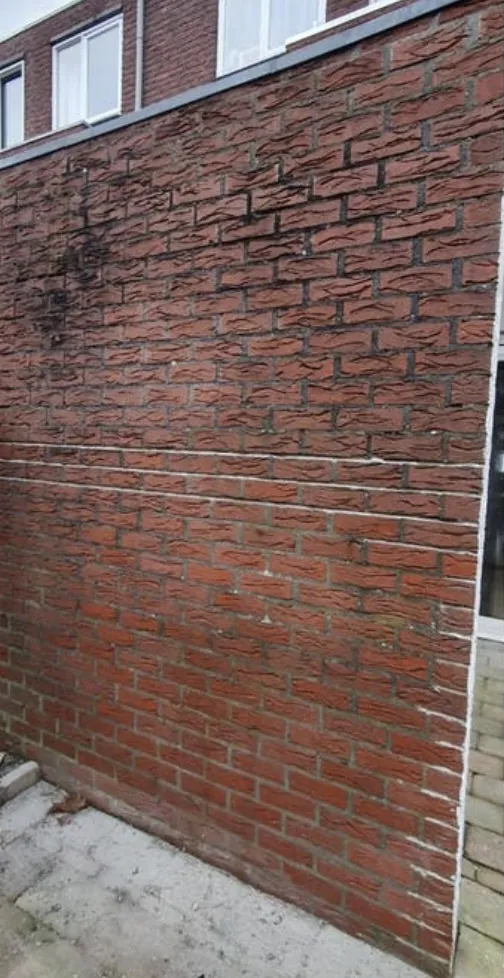
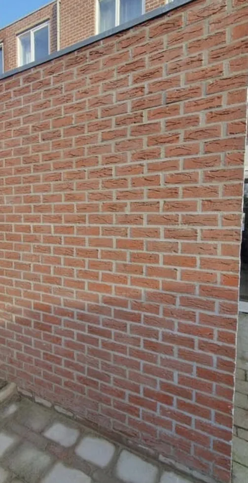

Voor
Na
voegwerk
Muur opnieuw gevoegd
Vervuild en uitgesleten voegwerk uitgehakt en opnieuw ingevoegd. Dezelfde muur, voor en na.
Voor nieuw voegwerk, gevelrenovatie, impregneren en gevelherstel. Vakkundig uitgevoerd met oog voor kwaliteit en duurzaamheid.

Voor
NaVan een enkel muurtje tot een compleet pand: één partij voor al het voeg- en gevelwerk.
Uitgesleten voegen haken we uit en vullen we opnieuw, met de mortelsoort en korrel die bij uw steen horen.
We brengen uw gevel terug naar de oorspronkelijke staat en pakken de oorzaak van schade aan, niet alleen het symptoom.
Een onzichtbare, dampopen bescherming tegen regen en vorst, zonder dat de gevel zijn uiterlijk verliest.
Groene aanslag, roet en vliegvuil verwijderen we met een methode die past bij de hardheid van uw steen.
Zes dingen die het verschil maken tussen een gevel die even mooi is en een gevel die blijft.
Vraag vrijblijvend een offerte aan. We komen langs, kijken ernaar en geven u een eerlijk advies met een vaste prijs.
Staat uw vraag er niet bij? Bel of app gerust, we denken graag mee.
Dat hangt af van de staat van de voegen, de steensoort en de bereikbaarheid van de gevel. Na een inspectie geven we u één vaste prijs voor het hele werk, zodat u niet halverwege voor verrassingen komt te staan.
Een gemiddelde woninggevel doen we meestal in enkele werkdagen. Grotere panden of werk dat per verdieping moet worden uitgevoerd, plannen we in overleg in. U hoort vooraf de doorlooptijd.
Ja. Bij monumenten en oudere panden gebruiken we kalkmortel en werken we volgens de eisen die bij dat soort gevels horen. We stemmen de aanpak altijd af met u en, waar nodig, met de gemeente.
Nee. Zandstralen is niet altijd nodig en niet altijd mogelijk: bij te zachte steen beschadigt het de gevel juist. Wij beoordelen per gevel wat de veiligste en beste methode is en leggen uit waarom.
Wij werken in heel Noord-Brabant, Zeeland en Zuid-Holland, van de grote steden tot de kleinere kernen eromheen. Twijfelt u of uw woonplaats binnen ons gebied valt? Neem gerust contact op.
Op ons voegherstel, de steenvervanging en het impregneren geven we garantie. Meldt u binnen die periode een probleem, dan komen we terug en lossen het op.
Vanuit Roosendaal werken wij in heel Noord-Brabant, Zeeland en Zuid-Holland, van de grote steden tot de kleinere kernen. Twijfelt u of wij bij u in de buurt komen? Bel of app gerust.
Bel, app of mail — u krijgt binnen één werkdag antwoord en een eerlijk advies over wat uw gevel nodig heeft.